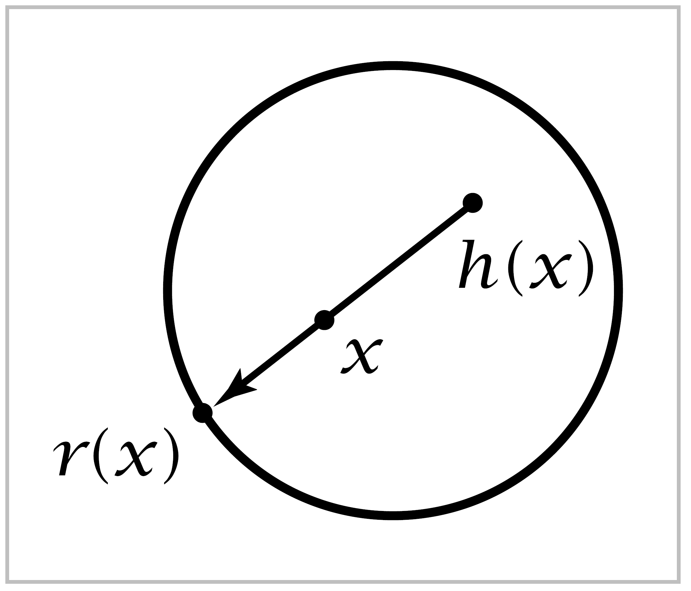

The Fundamental Group of the Circle#
Our first real theorem will be the calculation \(\pi_1(S^1) \approx \mathbb{Z}\). Besides its intrinsic interest, this basic result will have several immediate applications of some substance, and it will be the starting point for many more calculations in the next section. It should be nosurprise then that the proof will involve some genuine work.
Theorem 1.7. \(\pi_1(S^1)\) is an infinite cyclic group generated by the homotopy class of the loop \(w(s)=(\cos 2\pi s, \sin 2\pi s)\) based at \((1,0)\).
{kind=link}
Note that \([w]^n=[w_n]\) where \(w_n(s) = (\cos 2\pi ns, \sin 2\pi ns)\) for \(n \in \mathbb{Z}\). The theorem is therefore equivalent to the statement that every loop in \(S^1\) based at \((1,0)\) is homotopic to \(w_n\) for a unique \(n \in \mathbb{Z}\). To prove this the idea will be to compare paths in \(S^1\) with paths in \(\mathbb{R}\) via the map \(p:\mathbb{R} \rightarrow S^1\) given by \(p(s) = (\cos 2\pi s, \sin 2\pi s)\). This map can be visualized geometrically by embedding \(\mathbb{R}\) in \(\mathbb{R}^3\) as the helix parametrized by \(s \mapsto (\cos 2\pi s, \sin 2\pi s, s)\), and then \(p\) is the restriction to the helix of the projection of \(\mathbb{R}^3\) onto \(\mathbb{R}^2\), \((x,y,z) \mapsto (x,y)\). Observe that the loop \(w_n\) is the composition \(p\tilde{w}_n\) where \(\tilde{w}_n:I \rightarrow \mathbb{R}\) is the path \(\tilde{w}_n(s)=ns\), starting at \(0\) and ending at \(n\), winding around the helix \(\mid n \mid\) times, upward if \(n > 0\) and downward if \(n < 0\). The relation \(w_n = p \tilde{w}_n\) is expressed by saying that \(\tilde{w}_n\) is a lift of \(w_n\).
we will prove the theorem by studying how paths in \(S^1\) lift to paths in \(\mathbb{R}\). Most of the arguments will appy in much greater generality, and it is both more efficient and more enlightening to give them in the general context. The first step will be to define this context.
Given space \(X\), a covering space of \(X\) consists of a space \(\tilde{X}\) and a map \(p: \tilde{X} \rightarrow X\) satisfying the following condition:
(\(*\)) For each point \(x \in X\) there is an open neighborhood \(U\) of \(x\) in \(X\) such that \(p^{-1}(U)\) is a union of disjoint open sets each of which is mapped homeomorphically onto \(U\) by \(p\).
Such a \(U\) will be called evenly covered. For example, for the previously defined map \(p:\mathbb{R} \rightarrow S^1\) any open arc in \(S^1\) is evenly covered.
To prove the theorem we will need just the following two facts about covering spaces \(p:\tilde{X} \rightarrow X\).
For each path \(f: I \rightarrow X\) starting at a point \(x_0 \in X\) and each \(\tilde{x}_0 \in p^{-1}(x_0)\) there is a unique lift \(\tilde{f}:I\rightarrow \tilde{X}\) starting at \(\tilde{x}_0\).
For each homotopy \(f_t:I \rightarrow X\) of paths starting at \(x_0\) and each \(\tilde{x}_0 \in p^{-1}(x_0)\) there is a unique lifted homotopy \(\tilde{f}_t: I \rightarrow \tilde{X}\) of paths starting at \(\tilde{x}_0\)
Before proving these facts, let us see how they imply the theorem.
Proof of Theorem 1.7: Let \(f:I \rightarrow S^1\) be a loop at the basepoint \(x_0=(1,0)\), representing a given element of \(\pi_1(S^1, x_0)\). By (a) there is a lift \(\tilde{f}\) starting at \(0\). This path \(\tilde{f}\) ends at some integer \(n\) since \(p\tilde{f}(1)=f(1)=x_0\) and \(p^{-1}(x_0)=\mathbb{Z} \subset \mathbb{R}\). Another path in \(\mathbb{R}\) from \(0\) to \(n\) is \(\tilde{w}_n\), and \(\tilde{f} \simeq \tilde{w}_n\) via the linear homotopy \((1-t)\tilde{f}+t\tilde{w}_n\). Composing this homotopy with \(p\) gives a homotopy \(f \simeq w_n\) so \([f]=[w_n]\).
To show that \(n\) is uniquely determined by \([f]\), suppose that \(f \simeq w_n\) and :math:` f simeq w_m`, so \(w_m \simeq w_n. Let :math:`f_t`be a homotopy from :math:`w_m=f_0\) to \(w_n = f_1\). By (b) this homotopy lifts to a homotopy \(\tilde{f}_t\) of paths starting at \(0\). The uniqueness part of (a) implies that \(\tilde{f}_0 = \tilde{w}_m\) and \(\tilde{f}_1=\tilde{w}_n\). Since \(\tilde{f}_t\) is homotopy of paths, the endpoint \(\tilde{f}_t(1)\) is independent of \(t\). For \(t=0\) this endpoint is \(m\) and for \(t=1\) it is \(n\), so \(m=n\).
It reamins to prove (a) and (b). Both statements can be deduced from a more general assertion about covering space \(p:\tilde{X} \rightarrow X\):
Given a map \(F:Y \times I \rightarrow X\) and a map \(\tilde{F}:Y \times \{0\} \rightarrow \tilde{X}\) lifting \(F \mid Y \times \{0\}\), then there is a unique map \(\tilde{F}: Y \times I \rightarrow \tilde{X}\) lifting \(F\) and restricting to the given \(\tilde{F}\) on \(Y \times \{0\}\).
Statement a is the special case that \(Y\) is a point, and (b) is obtained by applying (c) with \(Y=I\) in the following way. The homotopy \(f_t\) in (b) gives a map \(F: I \times I \rightarrow X\) by setting \(F(s,t) = f_t(s)\) as usual. A unique lift \(\tilde{F} : I \times \{0\} \rightarrow \tilde{X}\) is obtained by an application of (a). Then (c) gives a unique lift \(\tilde{F}: I \times I \rightarrow \tilde{X}\). The restrictions \(\tilde{F} \mid \{0\} \times I\) and \(\tilde{F} \mid \{1\} \times I\) are paths lifting constant paths, hence they must also be constant by the uniqueness part of (a). So \(\tilde{f}_t(s) = \tilde{F}(s,t)\) is homotopy of paths, and \(\tilde{f}_t\) lifts \(f_t\) since \(p\tilde{F} = F\).
To prove (c) we will first construct a lift \(\tilde{F}:N\times I \rightarrow \tilde{X}\) for \(N\) some neighborhood in \(Y\) of a given point \(y_0 \in Y\). Since \(F\) is continuous, every point \((y_0, t) \in Y\times I\) has a product neighborhood \(N_t \times (a_t, b_t)\) such that \(F(N_t \times (a_t, b_t))\) is contained in an evenly covered neighborhood of \(F(y_0, t)\). By compactness of \(\{y_0\}\times I\), finitely many such products \(N_t \times (a_t, b_t)\) cover \(\{y_0\} \times I\). This implies that we can choose that for each \(i,\, F(N \times [t_i, t_{i+1}])\) is contained in an evenly covered neighborhood \(U_i\). Assume inductively that \(\tilde{f}\) has been constructed on \(N \times [0, t_i]\), starting with the given \(\tilde{F}\) on \(N \times \{0\}\). We have \(F(N\times [t_i, t_{i+1}]) \subset U_i\), so since \(U_i\) is evenly covered there is an open set \(\tilde{U}_i \subset \tilde{X}\) projecting homeomorphically onto \(U_i\) by \(p\) and containing the point \(\tilde{F}(y_0, t_i)\). After replacing \(N\) by a smaller neighborhood of \(y_0\) we my assume that \(\tilde{F}(N \times \{t_i\})\) is contained in \(\tilde{U}_i\), namely, replace \(N \times \{t_i\}\) by its intersection with \((\tilde{F}|N \times \{t_i\})^{-1}(\tilde{U}_i)\). Now we can define \(\tilde{F}\) on \(N \times [t_i, t_{i+1}]\) to be the composition of \(F\) with the homeomorphism \(p^{-1}: U_i \rightarrow \tilde{U}_i\). After a finite number of steps we eventually get a lift \(\tilde{F}:N \times I \rightarrow \tilde{X}\) for some neighborhood \(N\) of \(y_0\).
Next we show the uniqueness part of (c) in the special case that \(Y\) is a point. In this case we can omit yfrom the rotation. So suppose \(\tilde{F}\) and \(\tilde{F}\) are two lifts of \(F:I \rightarrow X\) such that \(\tilde{F}(0)=\tilde{F}'(0)'\). As before, choose a partition \(0=t_0<t_1< \cdots < t_m = 1\) of \(I\) so that for each \(i,\, F([t_i, t_{i+1}])\) is contained in some evenly covered neighborhood \(U_i\). Assume inductively that \(\tilde{F}=\tilde{F}'\) on \([0,t_i]\). Since \([t_i, t_{i+1}]\) is connected, so is projecting homeomorphically to \(U_i\) as in (*). By the same token, \(\tilde{F}'([t_i,t_{i+1}])\) lies in a single \(\tilde{U}_i\), in fact in the same one that contains \(\tilde{F}([t_i, t_{i+1}])\) since \(\tilde{F}'(t_i)=\tilde{F}(t_i)\). Because \(p\) is injective on \(\tilde{U}_i\) and \(p\tilde{F} = p\tilde{F}'\), it follows that \(\tilde{F}=\tilde{F}'\) on \([t_i, t_{i+1}]\), and the induction step is finished.
The last step in the proof of (c) is to observe that since the \(\tilde{F}\)’s constructed above on sets of the form \(N\times I\) are unique when restricted to each segment \(\{y\}\times I\), they must agree whenever two such sets \(N \times I\) overlap. So we obtain a well-defined lift \(\tilde{F}\) on all of \(Y \times I\). This \(\tilde{F}\) is cocntinuous since it is continuous on each \(N \times I\). And \(\tilde{F}\) is unique since it is unique on each segment \(\{y\} \times I\). ◻
Now we turn to some applications of the calculation of \(\pi_1(S^1)\), beginning with a proof of the Fundamental Theorem of Algebra.
Theorem 1.8. Every nonconstant polynomial with coefficients in \(\mathbb{C}\) has a root in \(\mathbb{C}\).
Proof: We may assume the polynomial is of the form \(p(z) = z^n + a_1z^{n-1}+ \cdots + a_n\). If \(p(z)\) has no roots in \(\mathbb{C}\), then for each real number \(r \geq 0\) the formula
defines a loop in the unit circle \(S^1 \subset \mathbb{C}\) based at \(1\). As \(r\) varies, \(f_r\) is a homotopy of loops based at \(1\). Since \(f_0\) is the trivial loop, we deduce that the class \([f_r] \in \pi_1(S^1)\) is zero for all \(r\). Now fix a large value of \(r\), bigger than \(|a_1|+ \cdots + |a_n|\) and bigger than \(1\). Then for \(|z|=r\) we have
From the inequality \(|z^n| > |a_1z^{n-1} + \cdots + a_n|\) it follows that the polynomial \(p_t(z)=z^n+t(a_1z^{n-1}+ \cdots a_n)\) has no roots on the circle \(|z|=r\) when \(0 \leq t \leq 1\). Replacing \(p\) by \(p_t\) in the formula for \(f_r\) to the loop \(w_n(s) = e^{2\pi ins}\). By Theorem 1.7, \(w_n\) represents \(n\) times a generator of the infinite cyclic group \(\pi_1(S^1)\). Since we have shown that \([w_n]=[f_r]=0\), we conclude that \(n=0\). Thus the only polynomials without roots in \(\mathbb{C}\) are constants. ◻
Our next application is the Brouwer fixed point theorem in dimension \(2\).
Theorem 1.9. Every continuous map \(h:D^2 \rightarrow D^2\) has a fixed point, that is, a point \(x \in D^2\) with \(h(x)=x\).
Here we are using the standard notation \(D^n\) for the closed unit disk in \(\mathbb{R}^n\), all vectors \(x\) of length \(|x| \leq 1\). Thus the boundary of \(D^n\) is the unit sphere \(S^{n-1}\).
{kind=link}
Proof: Suppose on the contrary that \(h(x) \neq x\) for all \(x \in D^2\). Then we can define a map \(r:D^2 \rightarrow S^1\) by letting \(r(x)\) be the point of \(S^1\) where the ray in \(\mathbb{R}^2\) starting at \(h(x)\) and passing through \(x\) leaves \(D^2\). Continuity of \(r\) is clear since small perturbations of \(x\) produce small perturbations of \(h(x)\), hence also small perturbations of the ray through these two points. The crucial property of \(r\), besides continuity, is that \(r(x) = x\) if \(x \in S^1\). Thus \(r\) is a retraction of \(D^2\) onto \(S^1\). We will show that no such retraction can exist.
Let \(f_0\) be any loop in \(S^1\). In \(D^2\) there is a homotopy of \(f_0\) to a constant loop, for example the linear homotopy \(f_t(s)=(1-t)f_0(s)+tx_0\) where \(x_0\) is the basepoint of \(f_0\). Since the retraction \(r\) is the identity on \(S^1\), the composition \(rf_t\) is then a homotopy in \(S^1\) from \(rf_0=f_0\) to the constant loop at \(x_0\). But this contradicts the fact that \(\pi_1(S^1)\) is nonzero. ◻
This theorem was first proved by Brouwer around 1910, quite early in the history of topology. Brouwer in fact proved the corresponding result for \(D^n\), and we shall obtain this generalization in Corollary using homology groups in place of \(\pi_1\). One could also use the higher homotopy group \(\pi_n\). Brouwer’s original proof used neither homology nor homotopy groups, which had not been invented at the time. Instead it used the notion of degree for maps \(S^n \rightarrow S^n\), which we shall define in §2.2 using homology but which Brouwer defined irectly in more geometric terms.
These proofs are all arguments by contradiction, and so they show just the existence of fixed points without giving any clue as to how to find one in explicit cases. Our proof of the Fundamental Theorem of Algebra was similar in this regard. There exist other proofs of the Brouwer fixed point theorem that are somewhat more constructive, for example the elegant and quite elementary proof by Sperner in 1928, which is explained very nicely in [Aigner-Ziegler 1999].
The techniques used to calculate \(\pi_1(S^1)\) can be applied to prove the Borsuk-Ulam theorem in dimension two:
Theorem 1.10. For every continuous map \(f:S^2 \rightarrow \mathbb{R}^2\) there exists a pair of antipodal points \(x\) and \(-x\) in \(S^2\) with \(f(x)=f(-x)\).
It may be that there is only one such pair of antipodal points \(x,\, -x\), for example if \(f\) is simply orthogonal projection of the standard sphere \(S^2 \subset \mathbb{R}^3\) onto a plane.
The Borsuk-Ulam theorem holds more generally for maps \(S^n \rightarrow \mathbb{R}^n\), as we will show in Corollary 2B.7. The proof for \(n=1\) is easy since difference \(f(x)-f(-x)\) changes sign as \(x\) goes halfway around the circle, hecne this difference must be zero for some \(x\). For \(n \geq 2\) the theorem is certainly less obvious. Is it apparent, for example, that at every instant there must be a pair of antipodal points on the surface of the earth having the same temperature and the same barometric pressure?
The theorem says in particular that there is no one-to-one continuous map from \(S^2\) to \(\mathbb{R}^2\), so \(S^2\) is not homeomorphic to a subspace of \(\mathbb{R}^2\), an intuitively obvious fact that is not easy to prove directly.
Proof: If the conclusion is false for \(f:S^2 \rightarrow \mathbb{R}^2\), we can define a map \(g:S^2\rightarrow S^1\) by \(g(x)=(f(x)-f(-x))/|f(x)-f(-x)|\). Define a loop \(\eta\) circling the equator of \(S^2 \subset \mathbb{R}^3\) by \(\eta (s)=(\cos 2\pi s, \sin 2\pi s, 0)\), and let \(h:I \rightarrow S^1\) be the composed loop \(g\eta\). Since \(g(-x)=-g(x)\), we have the relation \(h(s+\frac{1}{2})=-h(s)\) for all \(s\) in the interval \([0,\frac{1}{2}]\). As we showed in the calculation of \(\pi_1(S^1)\), the loop \(h\) can be lifted to a path \(\tilde{h}: I \rightarrow \mathbb{R}\). The equation \(h(s+\frac{1}{2})=-h(s)\) implies that \(\tilde{h}(s+\frac{1}{2})=\tilde{h}(s)+\frac{q}{2}\) for some odd integer \(q\) that might conceivably depend on \(s \in [0,\frac{1}{2}]\). But in fact \(q\) is independent of \(s\) since by solving the equation \(\tilde{h}(s+\frac{1}{2})=\tilde{h}(s)+\frac{q}{2}\) for \(q\) we see that \(q\) depends continuously on \(s \in [0, \frac{1}{2}]\), so \(q\) must be a constant since it is constrained to integer values. In particular, we have \(\tilde{h}(1)=\tilde{h}(\frac{1}{2})+\frac{q}{2}=\tilde{h}(0)+q\). This means that \(h\) represents \(q\) times a generator of \(\pi_1 (S^1)\). Since \(q\) is odd, we conclude that \(h\) is not nullhomotopic. But \(h\) was the composition \(g\eta : I \rightarrow S^2 \rightarrow S^1\), and \(\eta\) is obviously nullhomotopic in \(S^2\), so \(g\eta\) is nullhomotopic in \(S^1\) by composing a nullhomotopy of \(\eta\) with \(g\). THus we have arrived at a contradiction. ◻
Corollary 1.11. Whenever \(S^2\) is expressed as the union of three closed sets \(A_1,\, A_2\), and \(A_3\), t*then at least one of these sets must contain a pair of antipodal points* \(\{x,\,-x\}\)
Proof: Let \(d_i:S^2 \rightarrow \mathbb{R}\) measure distance to \(A_i\), that is, \(d_i(x)=\inf_{y\in A_t}|x-y|\). This is continuous function, so we may apply the Borsuk-Ulam theorem to the map \(S^2 \rightarrow \mathbb{R}^2\), \(x \mapsto (d_1(x), d_2(x))\), obtaining a pair of antipodal points \(x\) and \(-x\) with \(d_1(x)=d_1(-x)\) and \(d_2(x)=d_2(-x)\). If either of these two distances is zero, then \(x\) and \(-x\) both lie in the same set \(A_1\) or \(A_2\) since these are closed sets. On the other hand, if the distances from \(x\) and \(-x\) to \(A_1\) and \(A_2\) are both strictly positive, then \(x\) and \(-x\) lie in neither \(A_1\) nor \(A_2\) so they must lie in \(A_3\). ◻
To see that the number ‘tree’ in this result is best possible, consider a sphere inscribed in a tetrahedron. Projecting the four faces of the tetrahedron radially onto the sphere, we obtain a cover of \(S^2\) by four closed sets, none of which contains a pair of antipodal points.
Assuming the higher-dimensional version of the Borsuk-Ulam theorem, the same arguments show that \(S^n\) cannot be covered by \(n+1\) closed sets without antipodal pairs of points, though it can be covered by \(n+2\) such stes, as the higher-dimensional analog of a tetrahedron shows. Even the case \(n=1\) is somewhat interesting: If the circle is covered by two closed sets, one of them must contain a pair of antipodal points. This is of course false for nonclosed sets since the circle is the union of two disjoint half-open semicircles.
The relation between the fundamental group of a product space and the fundamental groups of its factors is as simple as one could wish:
Proposition 1.12. \(\pi_1(X \times Y)\) is isomorphic to \(\pi_1(X) \times \pi_1(Y)\) if \(X\) and \(Y\) are path-connected.
Proof: A basic property of the product topology is that a map \(f:Z \rightarrow X \times Y\) is the continuous iff the maps \(g:Z \rightarrow X\) and \(h:Z \rightarrow Y\) defined by \(f(z)=(g(z),h(z))\) are both continuous. Hence a loop \(f\) in \(X \times Y\) based at \((x_0, y_0)\) is equivalent to a pair of loops \(g\) in \(X\) and \(h\) in \(Y\) based at \(x_0\) and \(y_0\) respectively. Similarly, a homotopy \(f_t\) of a loop in \(X \times Y\) is equivalent to a pair of homotopies \(g_t\) and \(h_t\) of the corresponding loops in \(X\) and \(Y\). Thus we obtain a bijection \(\pi_1(X \times Y, (x_0,y_0)) \approx \pi_1(X,x_0)\times \pi_1(Y,y_0)\), \([f] \mapsto ([g],[h])\). This is obviously a group homomorphism, and hence an isomorphism. ◻
{kind=link}
Example 1.13: The Torus. By the proposition we have an isomorphism \(\pi_1(S^1 \times S^1) \approx \mathbb{Z} \times \mathbb{Z}\). Under this isomorphism a pair \((p,q) \in \mathbb{Z} \times \mathbb{Z}\) corresponds to a loop that winds \(p\) times around one \(S^1\) factor of the torus and \(q\) times around the other \(S^1\) factor, for example the loop \(w_{pq}(s)=(w_p(s),w_q(s))\). Interestingly, this loop can be knotted, as the figure shows for the case \(p=3,\, q=2\). The knots that arise in this fashion, the so-called torus knots, are studied in Example 1.24.
More generally, the \(n\)-dimensional torus, which is the product of \(n\) circles, has fundamental group isomorphic to the product of \(n\) copies of \(\mathbb{Z}\). This follows by induction on \(n\).